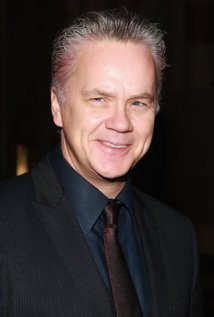

Summary

Andy Dufresne is a young and successful banker whose life changes drastically when he is convicted and sentenced to life imprisonment for the murder of his wife and her lover. Set in the 1940's, the film shows how Andy, with the help of his friend Red, the prison entrepreneur, turns out to be a most unconventional prisoner.
Cast Names (top billed)
- Tim Robbins
- Morgan Freeman
- Bob Gunton
- William Sadler
- Clancy Brown
- Gil Bellows
- Mark Rolston
Bio: Tim Robbins
Born in West Covina, California, but raised in New York City, Tim Robbins is the son of former The Highwaymen singer Gil Robbins and actress Mary Robbins. Robbins studied drama at UCLA, where he graduated with honors in 1981. That same year, he formed the Actors' Gang theater group, an experimental ensemble that expressed radical political observations through the European avant-garde form of theater. He started film work in television movies in 1983, but hit the big time in 1988 with his portrayal of dimwitted fastball pitcher "Nuke" Laloosh in Bull Durham (1988). Tall with baby-faced looks, he has the ability to play naive and obtuse (Cadillac Man (1990) and The Hudsucker Proxy (1994)) or slick and shrewd (The Player (1992) and Bob Roberts (1992)).